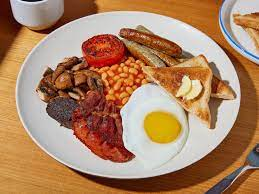
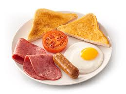
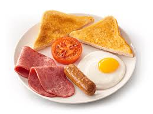
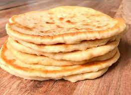
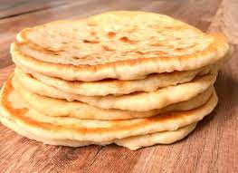
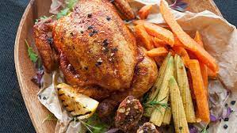
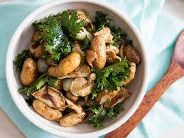
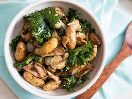
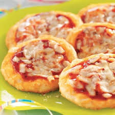
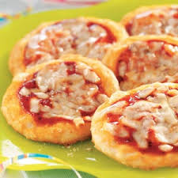

Breakfast

 
 Health Breakfast
Fresh fruit salad, muesli, a variety of nuts and natural yogurt, rounded off with honey and served with a fruit smoothie
R 90
Scrambled Eggs (v)
Three eggs, topped with sundried tomato pesto and rocket, served on Sourdough
R 70
The Austin Roberts (v)
Avocado and hummus on seed loaf with feta, balsamic-glazed cherry tomatoes, and basil
R 95
Mini Traditional Breakfast One fried egg, three rashers of bacon, grilled tomato, and toast
R 50
Traditional Breakfast
Two fried eggs, three rashers of bacon, a choice between traditional wors (sausage) OR pork banger, served with pawpaw chilli chutney, mushrooms, grilled tomato, and toast
R 110
Flapjacks Mascarpone-layered honey flapjacks served with bacon bits and seasonal berries
R 100
Open Croissant
Croissant served with Emmentaler cheese, Hickory ham, cherry tomatoes, and rocket
R 90
Kingfisher Breakfast Croissant
Croissant served with three scrambled eggs, salmon, cottage cheese and spring onion
R 105
The Blue Crane Breakfast
Ciabatta, topped with bacon, caramelised onion, tomato, poached eggs and Béarnasie sauce
R 85
The Sunrise
Beef Patty (200g), roasted cherry tomatoes, caramelised onion, and feta, topped with a fried egg served with chips
R 90
(served from 08h00 to 11h30 Monday to Sunday) Food Photography @hughfrost_photo Salads Garden Herb Salad (v)
R 85
Chicken, Pecan Nuts, Cranberry and Avocado Salad
R 100
Halloumi and Bulgur wheat salad Halloumi and Bulgur wheat salad with hummus, olives, cucumber, red onion (v) or avocado/ tofu (vegan)
R100
Salmon and asparagus Salad served with rocket, baby spinach, pine kernels and aioli
R 125
Light Meals


Bobotie Spring Rolls
spring rolls filled with lightly curried minced beef served with pawpaw chilli chutney
R 80
Gorgonzola Snails
served in a phyllo pastry basket
R105
Skaapstertjies served with Pap and Tomato Relish
R125
Thai style Prawn and Mussels
with Lemongrass, Coconut Milk and Ginger
R 125
Flatbreads
 
 Caprese Flatbread (v)
Cherry Tomatoes, Basil and Bocconcini
R 105
Grilled Chicken Flatbread
Grilled Bacon bits, Avocado, Red Pepper and Chipotle Ranch Dressing
R 120
Chorizo Flatbread
Chorizo, mushrooms, olives and pickled red onion
R 130
Mains
 
Exotic Mushrooms

Exotic Mushrooms served on Lemon Garlic Butter Cauliflower Rice and sweet pearl Onions (v)
R 100
Deep Fried Calamari
and Lime Tartar served with your choice of starch
R 125
Catch of the Day
served with Vegetables of the day and a choice of Starch
SQ Pap and Wors
traditional Pap and Wors with Sheba
R 90
Pie of the Day
served with Vegetables of the day and a choice of Starch
R 110
Baby Chicken
500g baby Chicken served with Vegetables of the Day and a choice of Starch
R 150
Pork Loin Ribs
served with grilled Corn, Coleslaw and Chips
R 190
Sirloin
Butter and Herb Sirloin 350g grilled Sirloin served with Vegetables of the day and a choice of Starch
R 200
Oxtail
Traditional Oxtail slow-cooked in red wine served with a choice of starch
R 210
KIDS PIZZA MENU
 
 MARGHERITA PIZZA A delicious crispy base made from the finest Italian pizza flour, with tomato concasse, and topped with mozzarella.
R49.90
HAM & CHEESE PIZZA
A delicious crispy base made from the finest Italian pizza flour, with tomato concasse, and topped with: mozzarella and ham.
R56.90
BACON & CHEESE PIZZA
A delicious crispy base made from the finest Italian pizza flour, with tomato concasse, and topped with: mozzarella and bacon.
R56.90
HAM & PINEAPPLE PIZZA
A crispy base made from the finest Italian pizza flour, with tomato concasse, and topped with: mozzarella, ham and pineapple
R59.90
CHICKEN MAYO
A delicious crispy base made from the finest Italian pizza flour, with tomato concasse, & topped with mozzarella & chicken mayo
R59.90
KIDS' PASTA MENU


ALFREDO
Delicious ham and a creamy white sauce.
R54.90
SPAGHETTI BOLOGNESE
Bolognese mince and tomato concasse.
R55.90
CHICKEN ALFREDO
Roast chicken strips and creamy white sauce.
R54.90
MACARONI & CHEESE
Macaroni in creamy cheese sauce. btn-group R42.90
Tasha's Restaurant
Upscale and creative European-style cuisine, with local influences, in a modern space with terrace. South African Restaurant of the Year 2013.
Find us
LEMNOS HOUSE, 82 President str, Germiston, Johannesburg, 1401
Mobile: 060 582 7070
E-mail: tasharestaurant@gmail.com


Our Opening Hours
Monday
18:00-21:00
Tuesday
12:00-21:00
Wednesday
12:00-21:00
Thursday
12:00-21:00
Friday
12:00-21:00
Saturday
12:00-21:00
Sunday
11:00-16:00